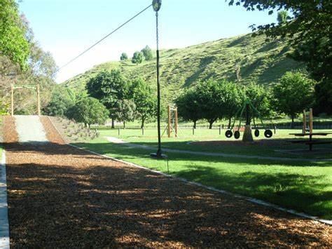

Puketapu Park
Puketapu Park is a free to use regional park in Puketapu. It features a large grassy area, and a playground. The whole park is an off-leash area, however care must be taken around kids in the playground. NOTE: this link does not work, and just for display purposes.